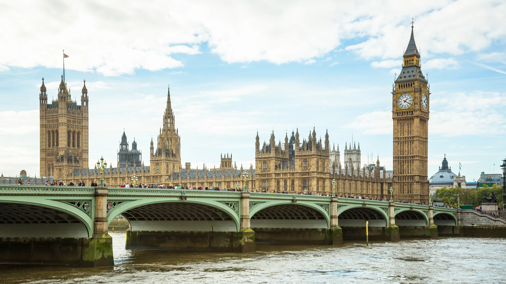
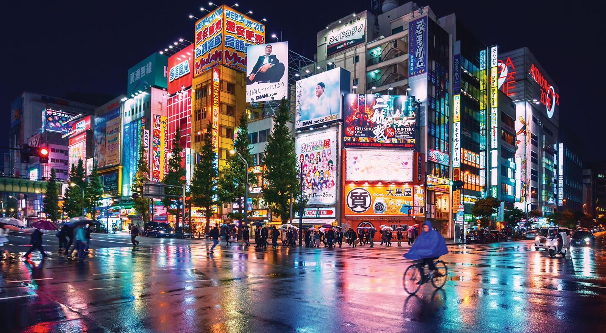

London
London is the capital city of England. It is the most populous city in the United Kingdom, with a metropolitan area of over 13 million inhabitants.
Standing on the River Thames, London has been a major settlement for two millennia, its history going back to its founding by the Romans, who named it Londinium.
Paris
Paris, the capital of France, is a vibrant European city renowned for its art, fashion, gastronomy, and culture. The city features a 19th-century cityscape with wide boulevards and the River Seine, highlighted by iconic landmarks such as the Eiffel Tower and the Gothic Notre-Dame Cathedral.
Paris is also famous for its café culture and designer boutiques along the Rue du Faubourg Saint-Honoré.

Tokyo
Tokyo, officially the Tokyo Metropolis, is Japan's capital and one of the world's most populous cities. Tokyo blends ultramodern and traditional elements, from neon-lit skyscrapers to historic temples, such as the Meiji Shinto Shrine and the Imperial Palace, surrounded by expansive gardens.
The city's museums showcase a range of exhibits, from classical art in the Tokyo National Museum to a reconstructed kabuki theater in the Edo-Tokyo Museum.